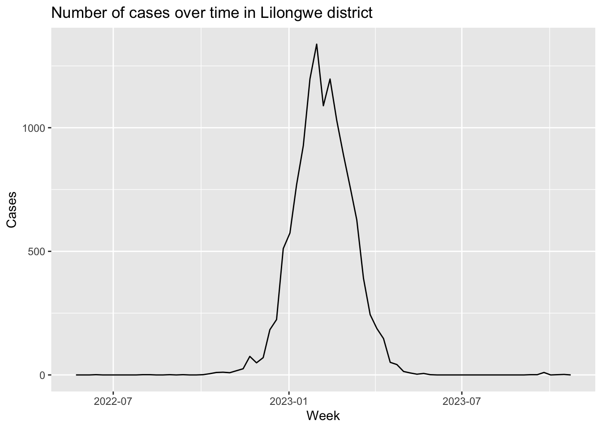

The goal of choleramalawi is to analyse the progress of the Cholera epidemic in Malawi (2023-24)
Installation
You can install the development version of choleramalawi from GitHub with:
# install.packages("devtools")
devtools::install_github("openwashdata/choleramalawi")
#> ── R CMD build ─────────────────────────────────────────────────────────────────
#> checking for file ‘/private/var/folders/q2/thf5k95955q8kn6twjrwljbr00jms0/T/RtmpZReeQh/remotese049e293447/openwashdata-choleramalawi-7e8def2/DESCRIPTION’ ... ✔ checking for file ‘/private/var/folders/q2/thf5k95955q8kn6twjrwljbr00jms0/T/RtmpZReeQh/remotese049e293447/openwashdata-choleramalawi-7e8def2/DESCRIPTION’
#> ─ preparing ‘choleramalawi’:
#> checking DESCRIPTION meta-information ... ✔ checking DESCRIPTION meta-information
#> ─ checking for LF line-endings in source and make files and shell scripts
#> ─ checking for empty or unneeded directories
#> ─ building ‘choleramalawi_0.1.0.tar.gz’
#> Warning: invalid uid value replaced by that for user 'nobody'
#>
#>
## Run the following code in console if you don't have the packages
## install.packages(c("dplyr", "knitr", "readr", "stringr", "gt", "kableExtra"))
library(dplyr)
library(knitr)
library(readr)
library(stringr)
library(gt)
library(kableExtra)
library(rnaturalearth)
library(rnaturalearthdata)
library(sf)
library(RColorBrewer)
#devtools::load_all()Alternatively, you can download the individual datasets as a CSV or XLSX file from the table below.
| dataset | CSV | XLSX |
|---|---|---|
| choleramalawi | Download CSV | Download XLSX |
Data
The package provides access to one dataset choleramalawi. It contains data on the progress of the cholera epidemic in each district of Malawi during 2022-23. The data focuses on cases and deaths for every week as well as cumulative cases and deaths.
library(choleramalawi)choleramalawi
The dataset choleramalawi contains data about the progress of the cholera epidemic in Malawi (2022-23). It has 1886 observations and 8 variables
choleramalawi |>
head(3) |>
gt::gt() |>
gt::as_raw_html()| epi_week | week_start | week | cases | deaths | c_cases | c_deaths | district |
|---|---|---|---|---|---|---|---|
For an overview of the variable names, see the following table.
| variable_name | variable_type | description |
|---|---|---|
| epi_week | character | Week of the epidemic |
| week_start | character | Week of the year |
| week | double | Date for the week |
| cases | character | No. of recorded cases |
| deaths | character | No. of recorded deaths |
| c_cases | character | Cumulative cases since the start of the epidemic |
| c_deaths | character | Cumulative deaths since the start of the epidemic |
| district | character | District of Malawi for which the record is collected |
Example
library(choleramalawi)
# Top districts by total cases
choleramalawi |>
group_by(district) |>
summarise(total_cases = sum(cases, na.rm = TRUE)) |>
arrange(desc(total_cases)) |>
head(10) |>
gt() |>
as_raw_html()| district | total_cases |
|---|---|
# Plotting the number of cases over time in Lilongwe district
library(ggplot2)
choleramalawi |>
filter(district == "Lilongwe") |>
ggplot(aes(x = week, y = cases)) +
geom_line() +
labs(title = "Number of cases over time in Lilongwe district",
x = "Week",
y = "Cases")
# Plot a map of districts of Malawi colored by the number of cases
total_cases_district <- choleramalawi |>
group_by(district) |>
summarise(total_cases = sum(cases, na.rm = TRUE)) |>
mutate(total_cases = ifelse(is.na(total_cases), 0, total_cases))
malawi_map <- ne_states(country = "Malawi", returnclass = "sf")
malawi_map <- malawi_map %>%
left_join(total_cases_district, by = c("name" = "district"))
ggplot(malawi_map) +
geom_sf(aes(fill = total_cases)) +
scale_fill_viridis_c(guide="none") +
theme_void() +
labs(title = "Cholera Cases by District in Malawi")License
Data are available as CC-BY.
Citation
Please cite this package using:
citation("choleramalawi")
#> To cite package 'choleramalawi' in publications use:
#>
#> Dubey Y (2024). "choleramalawi: Progress Of Cholera Epidemic in
#> Malawi 2022-23." doi:10.5281/zenodo.13920530
#> <https://doi.org/10.5281/zenodo.13920530>,
#> <https://github.com/openwashdata/choleramalawi>.
#>
#> A BibTeX entry for LaTeX users is
#>
#> @Misc{Dubey Y (2024),
#> title = {choleramalawi: Progress Of Cholera Epidemic in Malawi 2022-23},
#> author = {Yash Dubey},
#> year = {2024},
#> url = {https://github.com/openwashdata/choleramalawi},
#> doi = {10.5281/zenodo.13920530},
#> abstract = {A dataset that tracks the progress of the cholera epidemic in each district of Malawi in 2022-23.},
#> version = {0.1.0},
#> }